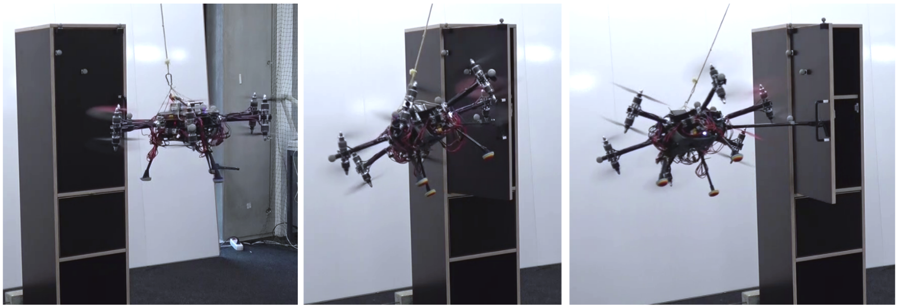

Reinforcement Learning for Aerial Manipulation of Articulated Objects
Master's Thesis at the Autonomous Systems Lab (ASL), ETH Zurich · Supervisors: Eugenio Cuniato, Dr. Olov Andersson, Dr. Weixuan Zhang, Dr. Marco Tognon, Prof. Daniel Watzenig, Prof. Roland Siegwart